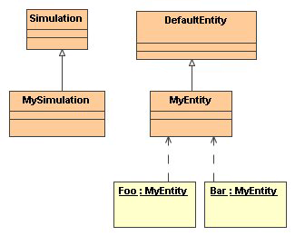
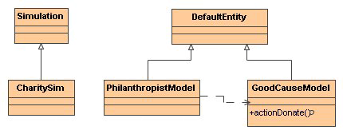
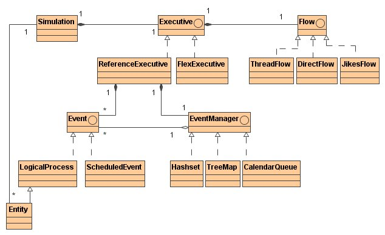
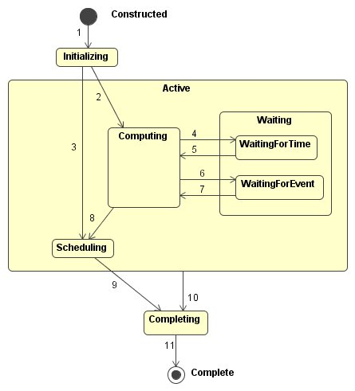

Please read this first - Foundation classes and documentation to build
discrete-event simulations.

|
Tortuga
A Discrete Event Simulation Framework
Java Meets Simulation Project
MITRE Sponsored Research to Improve Java Simulation Performance
Tortuga Version 4.0.1
17 December 2007
|
Project Sites:
User
Developer
Contact:
Tortuga List
|
Contents
Building Simulations
Infrastructure Documentation
Introduction
Tortuga is a package
for building discrete-event simulations.
It is a product of the Java Meets Simulation MITRE-Sponsored Research project.
This package contains the foundation classes needed to build
discrete-event simulations, structured either as interacting processes, or
scheduled events, or a mixture.
All simulations evolve simulated time to model some aspect of the real world.
This package assumes that a simulation consists of a set of entities and their environment
that evolve time synchronously,
that the entities can interact with each other, and interact with their environment.
Each entity executes activities or events that occur at points in simulated time;
time evolves for that entity during the gaps between the events.
Thus this package supports discrete-event, rather than continuous-time, simulations.
In the terminology used in this package, an entity is a persistent simulated being.
A simulation is a collection of entities that can interact with each other,
and which share a common definition of simulation time.
Entities are initialized and registered with a simulation.
A simulation is run to execute it and its entities.
A developer builds a simulation by defining classes of entities, one Java class for each entity type.
All simulation entities extend {@link org.mitre.sim.DefaultEntity DefaultEntity},
or implement the interface {@link org.mitre.sim.ProcessDelegate ProcessDelegate}.
The developer also defines a subclass of {@link org.mitre.sim.Simulation Simulation}.
An instance of a {@link org.mitre.sim.Simulation Simulation} subclass represents a
group of entities in a single simulation.
This package constitutes the application programmer's interface to a larger Java framework.
The framework comprises this package, an implementation of a simulation executive
that animates simulations built with the framework, and a Graphical User Interface (GUI) package,
{@link org.mitre.sim.gui}, that provides control over and visibility into an executing simulation.
Packages marked as "Supporting infrastructure" facilitate simulation functioning but
their structure and documentation are not intended for a general audience.
Organizing A Simulation
Discrete-event simulations can be organized in different ways.
Two popular organizing principles, or views, of discrete-event simulations are the
interacting-process view and the scheduled-events view.
This simulation framework supports both views, and each is described below.
An entity can exploit either or both views.
A simulation can include entities that support either view.
Interacting Processes View
The simulation structure that has the greatest intuitive appeal is the process-interaction method.
The notion is that the computer program should emulate the flow of an object through the system.
The entity moves as far as possible in the system until it is delayed, enters an activity,
or exits from the system.
When the entity's movement is halted, the clock advances to the time of the next movement of any entity.
This flow, or movement, describes in sequence all the states that the object can attain in the system.
[J. Banks, Handbook of Simulation, Wiley, 1998]
This section describes the framework's support for entities viewed as interacting processes.
Constructing an Interacting Processes Simulation
A developer builds a simulation by defining classes of entities, one Java class for each entity type.
Java class {@link org.mitre.sim.DefaultEntity DefaultEntity}
is the base class for simulation entities.
The developer also defines a subclass of {@link org.mitre.sim.Simulation Simulation}.
An instance of a {@link org.mitre.sim.Simulation Simulation} subclass represents a
group of entities in a single simulation.
Example: Constructing an Interacting Processes Simulation
This example constructs a simple simulation that
adheres to the interacting-processes view of discrete-event simulation.
Two instances of class MyEntity run in the same simulation;
each instance has a different name but the same behavior.
The class diagram for this simulation is:

|
The class MySimulation contains the main method that runs the simulation by
creating a new instance of itself and invoking the framework method
{@link org.mitre.sim.Simulation#run() run} on that instance.
The framework also defines an
{@link org.mitre.sim.Simulation#initialize() initialize}
method that may be overridden by classes extending
{@link org.mitre.sim.Simulation Simulation}.
The executive executes the {@link org.mitre.sim.Simulation#initialize() initialize} method when simulation
time is zero and before simulation time begins to advance.
MySimulation creates two instances of MyEntity and affiliates them with the simulation using the
{@link org.mitre.sim.Simulation#register(EntityDelegate) register} framework method.
Entities not registered with a simulation are ignored by the executive.
This source code is available in
tar and
zip archive formats.
class MyEntity extends DefaultEntity {
public void agenda() {
}
}
public class MySimulation extends Simulation {
public void initialize() {
register(new MyEntity("Foo"));
register(new MyEntity("Bar"));
}
public static void main(String[] args) {
new MySimulation().run();
}
}
|
Advancing Time
Simulations manipulate simulation time, normally relying on an executive to
orchestrate the execution of a set of entities.
The executive uses simulation time to decide the sequence of entity execution.
Entities assign values of simulation time to their individual activities.
The executive uses this assignment to start, suspend, resume, and terminate entity execution.
This manipulation of entity execution allows the executive to create causal relationships in the simulation.
So, if an entity assigns event A to simulation time t and another entity
assigns event B to time t+1,
then event A occurs before event B.
Entities assign simulation time to their computations using inherited framework methods
defined on class {@link org.mitre.sim.DefaultEntity DefaultEntity}. This section introduces the
{@link org.mitre.sim.DefaultEntity#waitForTime(double) waitForTime(x)} method that always
returns control to the entity
after x units of time have elapsed.
Other methods, described later, provide more complex control of simulated time.
Example: Advancing Time
This example extends the simulation constructed in the previous section.
Here, class MyEntity displays the string "Hello", "Still here",
and "Good Bye" at three different points in the evolution of simulation time.
As before, two instances of class MyEntity run in the same simulation.
Each instance has a different name but the same behavior.
This example illustrates:
- Implicit assignment of entity computations to specific values of simulation time and
- Simulation executive action to coordinate the execution of multiple entities.
|
The first action in the MyEntity {@link org.mitre.sim.Entity#agenda() agenda}
displays the string "Hello" using convenience method
{@link org.mitre.sim.Entity#info(String) info}.
This action is implicitly assigned a simulation time value of zero.
The next statement in the agenda is waitForTime(2.0).
The {@link org.mitre.sim.Entity#waitForTime(double) waitForTime} invocation tells the executive that the entity
wants to place 2.0 units of simulation time between the display of string "Hello" and
the display of "Still here."
This implicitly assigns a simulation time value of 2.0 to the display of string "Still here."
The fourth statement, waitForTime(3.0), places 3.0 units of simulation time between the
display of "Still here" and the display of "Good Bye."
The display of "Good Bye" is thus assigned a simulation time of 5.0.
The class MySimulation contains the main method that runs the simulation
by creating a new instance of itself and invoking the framework method
{@link org.mitre.sim.Simulation#run() run} on that instance.
It also contains method
{@link org.mitre.sim.Simulation#initialize() initialize};
the executive executes this method when simulation
time is zero and before simulation time begins to advance.
MySimulation creates two instances of MyEntity and affiliates them with the simulation using the
{@link org.mitre.sim.Simulation#register(EntityDelegate) register} framework method.
This source code is available in
tar and
zip archive formats.
public final class MyEntity extends DefaultEntity {
public void agenda() {
info("Hello");
waitForTime(2.0);
info("Still here");
waitForTime(3.0);
info("Good Bye");
}
}
public final class MySimulation extends Simulation {
public void initialize() {
register(new MyEntity(), "Foo");
register(new MyEntity(), "Bar");
}
public static void main(String[] args) {
new MySimulation().run();
}
}
|
|
In the output of MySimulation (below),
the first line contains infrastructure version information displayed by the executive.
In the rest of the output, {@link org.mitre.sim.Entity#info(String) info}
adds current simulation time and the entity name to the supplied message string.
The output demonstrates the action of the executive both to assign simulation time to entity
computations and to coordinate the execution of multiple entities.
The 2.0 and 3.0 unit waits between the messages caused "Hello" to receive
a simulation time of 0.0, "Still here" a value of 2.0, and "Good Bye" a value of 5.0 (2.0 + 3.0).
The action of the two instances of MyEntity, Foo and Bar, was interleaved by the executive
to maintain proper temporal ordering. Observe that both entities displayed "Hello" before either entity displayed
"Still here."
Tortuga, Pausing Exec 0.3 TreeMap 1.1, Tiger Flow 0.9.3, Java HotSpot(TM) Client VM 1.6.0_03-b05
0.000 Foo Hello
0.000 Bar Hello
2.000 Foo Still here
2.000 Bar Still here
5.000 Foo Good Bye
5.000 Bar Good Bye
|
Action Methods
Simulation entities must be able to affect each other in simulation time.
The previous section showed an entity's proactive, i.e., self-initiated,
behavior.
This section presents a reactive behavior mechanism that lets
entities interact directly.
This mechanism supports
- Creation of services offered by one entity and employed by others,
- Control of entity behavior while offering services, and
- Management of the time span over which services are offered.
Entities offer services to each other by creating action methods.
An action method is a method added to a subclass of
{@link org.mitre.sim.DefaultEntity DefaultEntity} that contains an invocation of
{@link org.mitre.sim.Entity#actionOccurred(Enum) actionOccurred}.
Action methods are different from other methods in that their invocation can change the
control flow of the entity that offers them.
Specifically, receipt of an action method invocation can affect when
{@link org.mitre.sim.Entity#waitForAction(double, Enum) waitForAction} invocations return.
This section also introduces the framework method
{@link org.mitre.sim.Entity#waitForAction(double,Enum) waitForAction}.
With this call, the entity waits for an certain amount of time to pass.
The difference between
{@link org.mitre.sim.Entity#waitForAction(double,Enum) waitForAction(t, enumToken)}
and
{@link org.mitre.sim.Entity#waitForTime(double) waitForTime(t)}
is how they handle action methods.
When {@link org.mitre.sim.Entity#waitForTime(double) waitForTime(t)} is invoked,
the framework method always returns control after exactly t units of simulation time have passed.
During those t units of simulation time, the entity could have received any number of
action methods invocations.
When {@link org.mitre.sim.Entity#waitForAction(double,Enum) waitForAction(t, enumToken)} is used, control returns
when either t units of simulation time have passed or an
action method invocation has been received.
Method {@link org.mitre.sim.Entity#waitForAction(double,Enum) waitForAction} returns an
enum constant that conveys the reason the call returned.
The call can return either because t units of simulation time have passed or one of perhaps
several different action methods was invoked.
An enum constant is supplied when
{@link org.mitre.sim.Entity#waitForAction(double,Enum) waitForAction(t, enumToken)}
is invoked.
If the call returns because simulation time has passed, that enum constant
is returned.
By definition, each action method contains a call to
{@link org.mitre.sim.Entity#actionOccurred(Enum) actionOccurred(enumToken)}.
Each such call should supply a different enum token.
If the
{@link org.mitre.sim.Entity#waitForAction(double,Enum) waitForAction(t, enumToken)}
call returns because of invocation of a specific action method, the enum
supplied with that action method's actionOccurred invocation is returned.
As illustrated below, the user defines an enum class with constants for a
time return, and for each action method defined on the entity.
The enum returned from
{@link org.mitre.sim.Entity#waitForAction(double,Enum) waitForAction(t, enumToken)}
typically is cast to the user's enum type and used in a switch
statement.
Example: Action Methods
This example simulation has two directly interacting entities.
One entity employs a service provided by a second entity.
The second entity is mostly reactive but imposes constraints over the timing of the service being offered.
The class diagram for the example program is

|
PhilanthropistModel is a proactive entity that accepts an instance of
GoodCauseModel when it is constructed.
At two different points in simulation time, PhilanthropistModel interacts with
the GoodCauseModel entity to make a donation using the actionDonate
action method.
This source code is available in
tar and
zip archive formats.
public class PhilanthropistModel extends DefaultEntity {
GoodCauseModel recipient;
public PhilanthropistModel(GoodCauseModel gcm) {
recipient = gcm;
}
public void agenda() {
info("Hello");
waitForTime(1.0);
recipient.actionDonate("Food");
waitForTime(1.0);
recipient.actionDonate("Shelter");
waitForTime(1.0);
info("Good Bye");
}
}
|
GoodCauseModel accepts donations; however,
if four units of simulation time elapse without a donation, the GoodCauseModel
displays the message "No donations received in last 4 hours, going home." and then stops.
GoodCauseModel uses the
enum constant returned by
{@link org.mitre.sim.Entity#waitForAction(double,Enum) waitForAction}
to control its main loop.
These constants are defined in GoodCauseReturn as shown below.
If {@link org.mitre.sim.Entity#waitForAction(double,Enum) wiatForAction}
returns anything other than GoodCauseReturn.TIME,
then a donation was received in less than four units of time and GoodCauseModel
waits for more donations by remaining in the loop and calling
{@link org.mitre.sim.Entity#waitForAction(double,Enum) waitForAction} again.
If the return value is GoodCauseReturn.TIME,
four units of time have passed without a donation and
GoodCauseModel gives up by exiting its main loop, displaying a message, and
ending its {@link org.mitre.sim.Entity#agenda() agenda}.
public class GoodCauseModel extends DefaultEntity {
public void actionDonate(String donation) {
info(donation + " received");
GoodCauseReturn token;
if (donation.equals("Food")) token = GoodCauseReturn.FOOD;
else if (donation.equals("Shelter")) token = GoodCauseReturn.SHELTER;
else token = GoodCauseReturn.OTHER;
actionOccurred(token);
}
public void agenda() {
while ((GoodCauseReturn)waitForAction(4.0, GoodCauseReturn.TIME) != GoodCauseReturn.TIME) {}
info("No donations received in last 4 hours, going home.");
}
}
public enum GoodCauseReturn {
TIME,
FOOD,
SHELTER,
OTHER,
}
|
The CharitySim class sets the context for the simulation.
It creates a single instance of GoodCauseModel and assigns it to the variable
recipient.
This is done so that the new instance can be passed to the framework method
{@link org.mitre.sim.Simulation#register(org.mitre.sim.EntityDelegate) register}
and provided to the PhilanthropistModel constructor.
public class CharitySim extends Simulation {
public void initialize() {
GoodCauseModel recipient = new GoodCauseModel();
register(recipient, "GoodCause");
register(new PhilanthropistModel(recipient), "Philanthropist");
}
public static void main(String[] args) {
new CharitySim().run();
}
}
|
The simulation output shows the interaction between the
Philanthropist and the GoodCause.
Philanthropist begins with the message "Hello,"
waits 1.0 units of time, and then makes a food donation.
The corresponding output shows the Philanthropist message "Hello"
at time 0.0 and a message from GoodCause at time 1.0 acknowledging receipt of the food.
The invocation of the action method actionDonate(String donation) caused the
{@link org.mitre.sim.Entity#waitForAction(double,Enum) waitForAction} invocation to return
with a value of GoodCauseReturn.FOOD after a wait of only 1.0 units of time.
Since it received a return value other than GoodCauseReturn.TIME,
the main loop in GoodCause makes a second
call to
{@link org.mitre.sim.Entity#waitForAction(double,Enum) waitForAction}.
Philanthropist waits another 1.0 units of time and donates shelter.
GoodCause acknowledges the donation of shelter with a message at time 2.0.
Finally, Philanthropist waits 1.0 unit of time, says "Good Bye," and ends.
As this was the third time Philanthropist waited for 1.0 units of time, the
"Good Bye" message is associated with simulation time 3.0.
At simulation time 3.0, 1.0 units of time have elapsed since the last donation.
GoodCause is waiting in a call to
{@link org.mitre.sim.Entity#waitForAction(double,Enum) waitForAction}
and has 3.0 units of time left until
{@link org.mitre.sim.Entity#waitForAction(double,Enum) waitForAction}
returns with a value of GoodCauseReturn.TIME.
A return value of GoodCauseReturn.TIME lets GoodCause exit
its main loop and then display its final message.
The time associated with the "No donations received in last 4 hours, going home."
message is 6.0, which is 4.0 units of time after the last donation at simulation
time 2.0.
Tortuga, Pausing Exec 0.3 TreeMap 1.1, Tiger Flow 0.9.3, Java HotSpot(TM) Client VM 1.6.0_03-b05
0.000 Philanthropist Hello
1.000 GoodCause Food received
2.000 GoodCause Shelter received
3.000 Philanthropist Good Bye
6.000 GoodCause No donations received in last 4 hours, going home.
|
Scheduled Events View
The basic concept of the event-scheduling method is to advance time to
when something next happens.
This usually releases a resource ...
The event then reallocates available
objects or entities by scheduling activities where they can now participate ...
Time is advanced to the next scheduled event (usually the end of an activity)
and activities are examined to see if any can now start as a consequence.
[J. Banks, Handbook of Simulation, Wiley, 1998]
This section presents a scheduled-event view of simulation.
Constructing a Scheduled Events Simulation
A developer builds a simulation by defining classes of entities, one Java class for each entity type.
The Java class {@link org.mitre.sim.DefaultEntity DefaultEntity} can be the base class
for simulation entities.
The developer also defines a subclass of {@link org.mitre.sim.Simulation Simulation}.
An instance of a {@link org.mitre.sim.Simulation Simulation} subclass represents a
group of entities in a single simulation.
Example: Constructing a Scheduled Events Simulation
This example constructs a simple simulation that
adheres to the event scheduling view of discrete-event simulation.
Two instances of class MyEntity run in the same simulation;
each instance has a different name but the same behavior.
The class diagram for this simulation is:
|
The class MySimulation contains the main method that runs the simulation by
creating a new instance of itself and invoking the framework method
{@link org.mitre.sim.Simulation#run() run} on that instance.
The framework also defines an
{@link org.mitre.sim.Simulation#initialize() initialize}
method that may be overridden by classes extending
{@link org.mitre.sim.Simulation Simulation}.
The executive executes the {@link org.mitre.sim.Simulation#initialize() initialize} method when simulation
time is zero and before simulation time begins to advance.
MySimulation creates two instances of MyEntity and affiliates them with the simulation using the
{@link org.mitre.sim.Simulation#register(EntityDelegate) register} framework method.
Entities not registered with a simulation are ignored by the executive.
This source code is available in
tar and
zip archive formats.
class MyEntity extends DefaultEntity {
public void initialize() {
}
}
public class MySimulation extends Simulation {
public void initialize() {
register(new MyEntity("Foo"));
register(new MyEntity("Bar"));
}
public static void main(String[] args) {
new MySimulation().run();
}
}
|
Scheduling Events
The scheduled-event view of simulation sees the world as a collection of
events rather than entities.
An
event is a block of code executed at one or more points in simulation time.
A simulation contains a dynamic collection of scheduled events, where a
scheduled event is the pairing of an event (a block of code) with a value
of simulation time specifying when the code should be executed.
The executive executes scheduled events in order of the time value
associated with each event.
Once executed, the scheduled event is removed from the collection.
Scheduled events are added to the collection by events themselves.
Events create new scheduled events by invoking a framework service that
associates the name of an event with an amount of simulation time that
must pass before the event is executed.
In this framework, an event is any {@link org.mitre.sim.DefaultEntity DefaultEntity}
method other
than an agenda method.
Events are scheduled using the
{@link org.mitre.sim.Entity#schedule(java.lang.String,double, Object[]) schedule}
framework service.
This service can be used to schedule events from any entity method, including the
agenda.
Methods used as events can receive arguments.
Arguments to a scheduled event are stored by the framework when the event is scheduled
and are then passed to the event method at the time it is invoked.
Arguments are passed to the framework as an array of Objects using the
{@link org.mitre.sim.Entity#schedule(java.lang.String, double, Object[]) schedule}
framework service.
When an event is scheduled using this service, the framework determines the class of
each supplied argument.
It uses the name of the method plus the list of argument class names
to find the method for the event.
If a method with the specified signature cannot be found, the exception
java.lang.IllegalArgumentException is thrown.
A scheduled-event simulation is simply a process in which events execute and create
other scheduled events.
To start this process, a mechanism is needed to identify and execute the initial event.
An initial event, or, more likely, a chain of events, can be scheduled in the entity's
{@link org.mitre.sim.EntityDelegate#initialize() initialize} method.
The framework calls this method once after the entity has been registered.
The code of the initial event can schedule other events, creating a chain of events.
Example: Scheduling Events
The SchedEventSim simulation below creates a single instance
of class SchedEntity.
That entity instance, in turn, creates a chain of scheduled events.
The scheduled events are method eventOne at time 2.0 and then method
eventTwo at time 5.0.
The source code for this example is available in
tar and
zip archive formats.
public class SchedEntity extends DefaultEntity {
public void eventOne(){
info("Event One");
schedule("eventTwo", 3.0);
}
public void eventTwo(){
info("Event Two");
}
public void initialize() {
info("Hello");
schedule("eventOne", 2.0);
info("Good Bye");
}
}
public class SchedEventSim extends Simulation {
public void initialize() {
register(new SchedEntity(), "SchedEntity");
}
public static void main(String[] args) {
new SchedEventSim().run();
}
}
|
The executive invokes the initialize method of SchedEntity at simulation time zero.
It displays the message "Hello", schedules an event, and
displays the message "Good Bye" all at simulation time zero.
The eventOne method displays the message "Event One"
at time 2.0 because it was scheduled at time zero with a 2.0
time unit delay.
The eventTwo method displays the message "Event Two"
at time 5.0 because it was scheduled by eventOne at
time 2.0 with a requested delay of 3.0.
Note that events continued to execute even though the initialize method
finished execution at time zero.
Tortuga, Pausing Exec 0.3 TreeMap 1.1, Tiger Flow 0.9.3, Java HotSpot(TM) Client VM 1.6.0_03-b05
0.000 SchedEntity Hello
0.000 SchedEntity Good Bye
2.000 SchedEntity Event One
5.000 SchedEntity Event Two
|
Mixing Interacting-Process and Scheduled-Event Views
The event scheduling capability works
in harmony with the time advancement services
used by interacting-process simulations.
Entities can simultaneously control their agendas
with time advancement services and
schedule chains of events as long as they observe the following:
- The agenda can invoke time advancement services and
{@link org.mitre.sim.Entity#schedule(java.lang.String, double,Object[]) schedule} events.
- Entity methods used for scheduled events can schedule other events including themselves.
- The agenda method cannot be scheduled as an event.
- Scheduled event methods cannot use time advancement services.
- Entity instances can only schedule events using their own methods.
Example: Mixed Process and Scheduled Events
The MixedModeSim simulation below creates a single instance
of class MixedModeEntity
and informs the executive that the simulation should be stopped
after 9.0 units of simulation time have passed.
That entity instance, in turn, creates a chain of scheduled events.
The agenda remains active and performs operations
in parallel with the scheduled event execution.
The source code for this example is available in
tar and
zip archive formats.
public class MixedModeSim extends Simulation {
public void initialize() {
register(new MixedModeEntity(), "MixedModeEntity");
setTimeLast(9.0);
}
public static void main(String[] args) {
new MixedModeSim().run();
}
}
public class MixedModeEntity extends DefaultEntity {
public void eventOne(){
info("Event One");
schedule("eventTwo", 3.0, new Object[] {"Fa "});
}
public void eventTwo(String message){
info("Event Two " + message);
schedule("eventTwo", 1.5, new Object[] {message + "La "});
}
public void agenda() {
info("Hello");
waitForTime(1.0);
schedule("eventOne", 2.0);
waitForTime(4.0);
info("Good Bye");
}
}
|
The agenda begins execution at time zero and displays the message "Hello."
It waits 1.0 units of time then schedules method eventOne with a 2.0 time
unit delay.
This means eventOne is executed at time 3.0.
It then waits for 4.0 units of time.
During this delay, time 3.0 arrives and event eventOne displays the message "Event One."
Event eventOne also schedules eventTwo for execution with a
3.0 unit delay.
This gives eventTwo a scheduled execution time of 6.0.
Eventually 4.0 units of time pass for the agenda and it displays the message "Good Bye"
at simulation time 5.0.
When time 6.0 arrives, eventTwo is executed.
It displays message "Event Two Fa" at time 6.0 and reschedules itself to run again in 1.5
units of time.
This is an infinite loop and only ends because MixedModeSim set the
last value of time to 9.0.
Tortuga, Pausing Exec 0.3 TreeMap 1.1, Tiger Flow 0.9.3, Java HotSpot(TM) Client VM 1.6.0_03-b05
0.000 MixedModeEntity Hello
3.000 MixedModeEntity Event One
5.000 MixedModeEntity Good Bye
6.000 MixedModeEntity Event Two Fa
7.500 MixedModeEntity Event Two Fa La
9.000 MixedModeEntity Event Two Fa La La
|
Entities and Java Inheritance
In all the examples presented to this point, entity implementation classes
extend {@link org.mitre.sim.DefaultEntity DefaultEntity}.
Because Java allows a class to extend only one class, extending DefaultEntity
means that an entity implementation cannot extend any other class.
This limitation might be unfortunate in the construction of simulations.
There is a way to avoid this limitation, by using a "delegation-style" interface
to the framework.
In the examples, each entity is represented by an instance of a class that extends
DefaultEntity.
In the delegation scheme, an entity is represented by two objects.
The first is an instance of a user-written class that implements the interface
{@link org.mitre.sim.ProcessDelegate ProcessDelegate}.
The second object is a corresponding instance of the framework class
{@link org.mitre.sim.Entity Entity}.
All the methods defined on {@link org.mitre.sim.DefaultEntity DefaultEntity} are defined on
either ProcessDelegate or Entity.
When user code requires an operation from the framework, it will call a method on
Entity, such as {@link org.mitre.sim.Entity#waitForTime(double) waitForTime}.
When the framework requires an operation on user code, the framework will invoke a method
on ProcessDelegate, such as {@link org.mitre.sim.ProcessDelegate#agenda() agenda}.
Each entity consists of a ProcessDelegate instance and a corresponding
Entity instance.
The user constructs a ProcessDelegate instance, then
{@link org.mitre.sim.Simulation#register(org.mitre.sim.EntityDelegate) registers} the
ProcessDelegate.
The register invocation returns an instance of
{@link org.mitre.sim.Entity Entity}.
This is the instance that corresponds to the entity.
The framework treats invocations on this instance as invocations on behalf of the entity.
The user code in the ProcessDelegate must keep a reference to its corresponding
Entity instance if it is to do anything useful.
The ProcessDelegate interface defines a
{@link org.mitre.sim.EntityDelegate#setEntity(org.mitre.sim.Entity) setEntity} method.
During registration, the framework invokes this method with the newly associated Entity.
Interacting-processes entities will implement
{@link org.mitre.sim.ProcessDelegate ProcessDelegate}.
Scheduled-event entities, that do not require an
{@link org.mitre.sim.ProcessDelegate#agenda() agenda} method, should implement
{@link org.mitre.sim.EntityDelegate EntityDelegate} instead.
Simulation Control
Simulation control has two domains as seen from the perspective of the simulation executive thread: internal and external.
Internal controls are available to the executive thread and simulation entities.
External controls are available to threads outside the simulation.
Before describing these controls, two preliminary
topics are discussed, concurrency and threads.
Apparent and Actual Concurrency
Fundamental to the interacting-processes view of simulation is the illusion of
concurrency among participating entities.
Each entity can be programmed as if its agenda were running concurrently with other entities' agendas in
simulation time.
In this framework, this does not produce true concurrency in the Java
language sense, with its consequent need to protect shared data structures
from concurrent access.
In one simulation, only one entity actually is computing at a time.
There is only one thread of control within one simulation.
This means that data shared between two entities in the same simulation need
not be protected against concurrent access.
The qualification "in one simulation" is important.
As discussed in the following section, the framework supports one application
running multiple simulations each in its own thread.
Any data shared between simulations, or between entities in different simulations,
must be protected.
Further, data shared between a simulation in one thread and a GUI running in another
thread must be protected.
Threads
It is important to understand where the simulation executive get its thread
because the thread source can limit accessibility to external controls.
A simulation executive gets its thread when an instance of
{@link org.mitre.sim.Simulation Simulation}
is created.
This thread can be a new one or the thread that created the
{@link org.mitre.sim.Simulation Simulation} instance.
A new thread is created for the executive by invoking the start method on the
{@link org.mitre.sim.Simulation Simulation} instance.
The thread that created the
{@link org.mitre.sim.Simulation Simulation} instance is
used by the executive when the {@link org.mitre.sim.Simulation#run() run}
method is invoked.
The start method is inherited by
{@link org.mitre.sim.Simulation Simulation} from class
java.lang.Thread.
Method {@link org.mitre.sim.Simulation#run() run}
is specified in interface
java.lang.Runnable.
Reuse of the creating thread is illustrated below:
1 x = 13;
2 new MySimulation().{@link org.mitre.sim.Simulation#run() run()};
3 x = 27;
In line 1, x is set to a value of 13.
In line 2, a new instance of MySimulation is created
and the {@link org.mitre.sim.Simulation#run() run} method
invoked.
The thread of control goes into the
{@link org.mitre.sim.Simulation#run() run} invocation
and does not return until the simulation is finished.
That is, the {@link org.mitre.sim.Simulation#run() run} invocation
blocks.
All aspects of the simulation see the value of x as 13.
In line 3, the simulation is complete and the value of x
is set to 27.
No part of the simulation ever sees x equal to 27.
In this situation it is not possible to use external controls.
If external controls are needed, the simulation executive must run
in an separate thread.
This is illustrated below:
1 x = 13;
2 new MySimulation().{@link org.mitre.sim.Simulation#start() start()};
3 x = 27;
In line 1, x is set to a value of 13.
In line 2, a new instance of MySimulation is created
and the {@link org.mitre.sim.Simulation#start() start} method invoked.
This creates a new thread for the simulation executive and allows
it to proceed in parallel.
Line 3 sets the value of x to 27.
This may happen before the simulation is finished.
Entities in the simulation may see the value of x
as 13 and then as 27, depending on how the new thread of the simulation is interleaved with
the thread that created it.
In this situation it is possible to use external controls.
Internal Controls
The internal simulation controls discussed below are available to a simulation
and its entities.
Initializing a Simulation
An industrial-strength simulation framework should facilitate the
specification of all initial entities and their relationships.
This is because meaningful simulations usually involve many
initial entities, and the cost of specifying them is a significant
part of the overall cost of the simulation.
Mechanisms that lower the cost of initialization can lower the overall
cost of a simulation.
The framework provides two methods to assist simulation initialization:
{@link org.mitre.sim.Simulation#initialize() Simulation.initialize} and
{@link org.mitre.sim.EntityDelegate#initialize() initialize}.
The framework calls
{@link org.mitre.sim.Simulation#initialize() Simulation.initialize}
at simulation time zero, before the agenda of any entity begins
or any scheduled events are processed.
The framework supplies a default implementation that does nothing.
A simulation developer can override this implementation;
initial entities should be created and registered here.
The framework calls
{@link org.mitre.sim.Entity#initialize() Entity.initialize}
for each entity before beginning its agenda.
The call might not occur at simulation time zero; an entity
can be registered and begin after time zero.
As with Simulation.initialize, the framework supplies a default empty
implementation that the developer can override.
Entity.initialize is a convenient place for
calculations that must be performed before its agenda begins, and after
entity is registered.
Ending a Simulation
A simulation ends for one of the following reasons:
- All entities have completed their agendas, and have no scheduled events,
- An entity explicitly stops the simulation, or
- The last value of simulation time arrives.
A simulation can be stopped by any entity using the framework method
{@link org.mitre.sim.Entity#stopSimulation() stopSimulation}.
This method informs the executive that the simulation should end
at the current simulation time.
When a simulation is stopped in this way, the notification services described in
section Completion Notification are invoked.
Events scheduled for the current simulation time may not be executed.
The executive contains a value of simulation time known as the "last value of time."
By default, this value is set to Double.POSITIVE_INFINITY.
Framework method {@link org.mitre.sim.Simulation#setTimeLast(double) setTimeLast}
is available on class {@link org.mitre.sim.Simulation Simulation}
to adjust the last value of simulation time.
The executive stops the simulation when the last value of time arrives.
Events scheduled for the same time as the last value may not be executed.
When a simulation is stopped because it reached the last value of simulation time,
the notification services described in
section Completion Notification are invoked.
Completion Notification
As described above, an entity or simulation can end in several ways.
Given this uncertainty, framework methods are available that can be overridden.
- {@link org.mitre.sim.Entity#entityComplete() entityComplete:}
Executed as the final step in the life of an entity.
- {@link org.mitre.sim.Simulation#simulationComplete() simulationComplete:}
Executed when all entities have ended and all their
{@link org.mitre.sim.Entity#entityComplete() entityComplete} methods are finished.
Example: Entity Initialization and Completion Notification
This example demonstrates both
{@link org.mitre.sim.Entity Entity}
and {@link org.mitre.sim.Simulation Simulation}
completion handling.
Class InterruptedEntity overrides framework method
{@link org.mitre.sim.Entity#entityComplete() entityComplete}
with a method that displays the message "Entity complete."
The {@link org.mitre.sim.Entity#agenda() agenda}
attempts to display message "Hello" at time 0.0, "Still here" at time 2.0, and "Good Bye" at time 5.0.
This source code is available in
tar and
zip archive formats.
public class InterruptedEntity extends DefaultEntity {
public void initialize() {
info("Initialized");
}
public void entityComplete() {
info("Entity complete");
}
public void agenda() {
info("Hello");
waitForTime(2.0);
info("Still here");
waitForTime(3.0);
info("Good Bye");
}
}
|
Class FinalSimulation overrides the framework method
{@link org.mitre.sim.Simulation#simulationComplete() simulationComplete}
with a method that displays the message "Simulation complete."
It also uses framework method
{@link org.mitre.sim.Simulation#setTimeLast(double) setTimeLast}
to set the last value of simulation time to 2.5.
public class FinalSimulation extends Simulation {
public void initialize() {
register(new InterruptedEntity(), "InterruptedEntity");
setTimeLast(2.5);
}
public void simulationComplete() {
info("Simulation complete");
}
public static void main(String[] args) {
new FinalSimulation().run();
}
}
|
The output of the simulation entity InterruptedEntity contains only two of the
three messages in its {@link org.mitre.sim.Entity#agenda() agenda}.
The simulation executive stopped the simulation at time 2.5 and invoked
the completion method for the entity, displaying "Entity complete," and
then the completion method for the simulation, displaying "Simulation complete."
Tortuga, Pausing Exec 0.3 TreeMap 1.1, Tiger Flow 0.9.3, Java HotSpot(TM) Client VM 1.6.0_03-b05
0.000 InterruptedEntity Initialized
0.000 InterruptedEntity Hello
2.000 InterruptedEntity Still here
2.500 InterruptedEntity Entity complete
2.5 FinalSimulation Simulation complete
|
Pacing a Simulation
A simulation can run as fast as its supporting computer permits or it can
be paced by the progress of real time.
By default, the simulation executive executes a simulation as fast as possible.
That is, the simulation completes in the minimum amount of real time.
The {@link org.mitre.sim.Simulation#setPace(long) setPace}
method on class {@link org.mitre.sim.Simulation Simulation}
gives control over the maximum rate at which the simulation evolves time
by specifying the minimum number of real milliseconds that must elapse
for each unit of simulation time.
It may take more than the specified number of milliseconds to compute one unit of simulation time --
the host computer may not have enough power to achieve the desired rate.
In this case,
{@link org.mitre.sim.Simulation#setPace(long) setPace}
has no effect.
The simulation can be reset to run as fast as possible by invoking the method with a zero argument:
{@link org.mitre.sim.Simulation#setPace(long) setPace(0)}.
Example: Setting the Simulation Pace
This example demonstrates the use of framework method
{@link org.mitre.sim.Simulation#setPace(long) setPace}
to control the maximum rate at which the simulation advances simulation time.
Class RocketModel simulates the countdown of a rocket as it prepares for launch.
It displays a message heard at Cape Canaveral: "T minus i seconds"
where i is the number of seconds until launch.
The count goes down from 10 seconds to 1 second.
After that, "Blast off!" is displayed.
The {@link org.mitre.sim.Entity#waitForTime(double) waitForTime} framework method
delays of one unit of simulation time between counts.
This source code is available in
tar and
zip archive formats.
public class RocketModel extends DefaultEntity {
public void agenda() {
for (int count = 10; count > 0; count--) {
info("T minus " + count + " seconds");
waitForTime(1.0);
}
info("Blast off!");
}
}
|
The LaunchSim class creates one instance of entity RocketModel
and registers it with the simulation executive.
Using {@link org.mitre.sim.Simulation#setPace(long) setPace}
it then directs the infrastructure that at least 1000 milliseconds
(one second) of real time must pass for each unit of simulation time.
public class LaunchSim extends Simulation {
public void initialize() {
register(new RocketModel(), "RocketModel");
setPace(1000);
}
public static void main(String[] args) {
new LaunchSim().run();
}
}
|
The output of the Launch Simulation shows how the infrastructure creates the desired
pace of simulation.
The output does not appear immediately;
a one second delay occurs between each displayed line.
That is, it took about 10 seconds, as measured by a wrist watch, for
all the output below to appear.
Tortuga, Pausing Exec 0.3 TreeMap 1.1, Tiger Flow 0.9.3, Java HotSpot(TM) Client VM 1.6.0_03-b05
0.000 RocketModel T minus 10 seconds
1.000 RocketModel T minus 9 seconds
2.000 RocketModel T minus 8 seconds
3.000 RocketModel T minus 7 seconds
4.000 RocketModel T minus 6 seconds
5.000 RocketModel T minus 5 seconds
6.000 RocketModel T minus 4 seconds
7.000 RocketModel T minus 3 seconds
8.000 RocketModel T minus 2 seconds
9.000 RocketModel T minus 1 seconds
10.000 RocketModel Blast off!
|
External Controls
This section describes the external controls available to threads outside
the simulation and ways for a simulation to communicate with
outside threads.
Pause and Resume
Pause and resume are actions taken by a thread outside the
{@link org.mitre.sim.Simulation Simulation}
instance;
both are methods on instances of
{@link org.mitre.sim.Simulation Simulation}.
They are
- {@link org.mitre.sim.Simulation#pauseSimulation() pauseSimulation} -
Suspend activity in the simulation by pausing the executive.
Once the executive is paused, simulation time does not advance.
- {@link org.mitre.sim.Simulation#resumeSimulation() resumeSimulation} -
Resume normal simulation executive operation.
Example: Simulation Pause and Resume
Like LaunchSim above, DelayedLaunchSim creates and
registers a single instance of RocketModel.
It uses
{@link org.mitre.sim.Simulation#setPace(long) setPace}
to create a rate where one unit of simulation time corresponds to
one second of real time.
The method delay(long) is a convenience to hide the clutter of an exception handler.
The main method creates a instance of DelayedLaunchSim
and gives it a new thread of control by invoking method {@link org.mitre.sim.Simulation#start() start}.
After line 16 is executed, two threads are running in parallel, one in the
main method and one in the simulation executive.
Line 17 puts the main thread to sleep for 5 seconds.
While the main thread is sleeping, the simulation continues to run.
The main thread wakes up in line 18 and uses the external control
method {@link org.mitre.sim.Simulation#pauseSimulation() pauseSimulation}
to stop the advance of simulation time.
When line 19 is executed, the main thread is put
back to sleep for 5 more seconds.
The simulation executive thread continues in the paused state initiated in line 18.
Finally, after sleeping for 5 seconds, the main thread
wakes up and resumes the executive thread using framework method
{@link org.mitre.sim.Simulation#resumeSimulation() resumeSimulation}.
This source code is available in
tar and
zip archive formats.
1 public class DelayedLaunchSim extends Simulation {
2
3 public void initialize() {
4 register(new RocketModel(), "RocketModel");
5 setPace(1000);
6 }
7
8 public void delay(long delay) {
9 try {
10 Thread.sleep(delay);
11 } catch (Exception e) {}
12 }
13
14 public static void main(String[] args) {
15 DelayedLaunchSim dls = new DelayedLaunchSim();
16 dls.{@link org.mitre.sim.Simulation#start() start()};
17 dls.delay(5000);
18 dls.{@link org.mitre.sim.Simulation#pauseSimulation() pauseSimulation()};
19 dls.delay(5000);
20 dls.{@link org.mitre.sim.Simulation#resumeSimulation() resumeSimulation()};
21 }
22
23 }
|
The output of the Delayed Launch Simulation shows how the infrastructure creates the desired
pace of simulation and the effect of external controls.
While the main thread slept in line 17, the simulation conducted the countdown
from 10 down to 5,
each count taking one second of real time.
After the countdown reached 5, the main thread woke up and paused the
simulation.
This resulted in a 5 second delay after which the countdown resumed at a normal pace.
It takes about 15 seconds, as measured by a wrist watch, for
all the output below to appear.
Tortuga, Pausing Exec 0.3 TreeMap 1.1, Tiger Flow 0.9.3, Java HotSpot(TM) Client VM 1.6.0_03-b05
0.000 RocketModel T minus 10 seconds
1.000 RocketModel T minus 9 seconds
2.000 RocketModel T minus 8 seconds
3.000 RocketModel T minus 7 seconds
4.000 RocketModel T minus 6 seconds
5.000 RocketModel T minus 5 seconds
Five second delay
6.000 RocketModel T minus 4 seconds
7.000 RocketModel T minus 3 seconds
8.000 RocketModel T minus 2 seconds
9.000 RocketModel T minus 1 seconds
10.000 RocketModel Blast off!
|
There is also a way make the simulation run as fast as possible to a
given simulation time, then pause.
See {@link org.mitre.sim.Simulation#pauseAfter(double,SimEventListener) Simulation.pauseAfter}.
The methods {@link org.mitre.sim.Simulation#pauseSimulation() pauseSimulation},
{@link org.mitre.sim.Simulation#resumeSimulation() resumeSimulation}, and
{@link org.mitre.sim.Simulation#pauseAfter(double,SimEventListener) pauseAfer}
are intended to be called by an external thread, perhaps an application's Swing
event dispatch thread.
Calling these methods from inside an entity will likely deadlock the simulation application.
Event Listeners
The framework employs an event-listener pattern to support
communications between entities and external processes like
graphical user interfaces.
Developers can create listeners by implementing interface
{@link org.mitre.sim.SimEventListener SimEventListener}.
These listeners wait for the arrival of
{@link org.mitre.sim.SimEvent SimEvent} events.
Currently, {@link org.mitre.sim.PeriodicEntity PeriodicEntity}
is the only source of
{@link org.mitre.sim.SimEvent SimEvents} in the framework.
{@link org.mitre.sim.PeriodicEntity PeriodicEntity} is a
framework-provided implementation of
{@link org.mitre.sim.EntityDelegate EntityDelegate}.
Instances of
{@link org.mitre.sim.PeriodicEntity PeriodicEntity}
produce a stream of
{@link org.mitre.sim.SimEvent SimEvents} for their
listeners at regular intervals of simulation time.
The amount of simulation time between events is specified
when the instance of
{@link org.mitre.sim.PeriodicEntity PeriodicEntity}
is created.
Listeners are affiliated with an instance of
{@link org.mitre.sim.PeriodicEntity PeriodicEntity}
by the
{@link org.mitre.sim.PeriodicEntity#addSimEventListener(SimEventListener) addSimEventListener}
method and removed with the
{@link org.mitre.sim.PeriodicEntity#removeSimEventListener(SimEventListener) removeSimEventListener}
method.
Example: Event Listeners
Class ListenerSim uses
{@link org.mitre.sim.PeriodicEntity PeriodicEntity}
to create periodic events for a listener.
The Listener class extends
{@link org.mitre.sim.SimEventListener SimEventListener} to
become a listener for
{@link org.mitre.sim.SimEvent SimEvent} events.
The listener displays the simulation time of the
{@link org.mitre.sim.SimEvent SimEvent}
events as they are received.
During initialization, a single instance of
{@link org.mitre.sim.PeriodicEntity PeriodicEntity}
is created and registered with the executive.
The value 1.5, supplied to the
{@link org.mitre.sim.PeriodicEntity PeriodicEntity} constructor,
means that this instance creates events every 1.5 units of
simulation time for all of its registered listeners.
Next, an instance of Listener is created and
added to the list of listeners waiting for
{@link org.mitre.sim.SimEvent SimEvents} to
arrive.
In the last step of initialization,
framework method
{@link org.mitre.sim.Simulation#setTimeLast(double) setTimeLast}
sets the last value of simulation time to 6.0.
Instances of
{@link org.mitre.sim.PeriodicEntity PeriodicEntity}
do not stop on their own so if this step were omitted,
the simulation would not terminate.
This source code is available in
tar and
zip archive formats.
public class ListenerSim extends Simulation {
public class Listener implements {@link org.mitre.sim.SimEventListener SimEventListener} {
public void {@link org.mitre.sim.SimEventListener#simEventOccurred simEventOccurred}({@link org.mitre.sim.SimEvent SimEvent} se) {
info("Event received at " + se.getTime());
}
}
public void initialize() {
{@link org.mitre.sim.PeriodicEntity PeriodicEntity} generator = new PeriodicEntity(1.5);
generator.{@link org.mitre.sim.PeriodicEntity#addSimEventListener(SimEventListener) addSimEventListener}(new Listener());
register(generator);
setTimeLast(6.0);
}
public static void main(String[] args) {
new ListenerSim().run();
}
}
|
The output of the Listener Simulation shows that events were produced every 1.5
units of simulation time.
The event stream concluded when the last value of simulation time, 6.0, was reached.
Tortuga, Pausing Exec 0.3 TreeMap 1.1, Tiger Flow 0.9.3, Java HotSpot(TM) Client VM 1.6.0_03-b05
1.5 ListenerSim Event received at 1.5
3.0 ListenerSim Event received at 3.0
4.5 ListenerSim Event received at 4.5
6.0 ListenerSim Event received at 6.0
|
Handling Exceptions
{@link org.mitre.sim.Entity#agenda() agenda} or
{@link org.mitre.sim.Entity#entityComplete() entityComplete}
methods could throw exceptions.
The simulation executive catches any exception thrown by the
these methods and supplies it to the
{@link org.mitre.sim.Entity#exceptionHandler(Exception e) exceptionHandler}
method below
public void exceptionHandler(Exception e) {
e.printStackTrace();
}
If this happens, no further attempt is made to run
{@link org.mitre.sim.Entity#agenda() agenda} or
{@link org.mitre.sim.Entity#entityComplete() entityComplete}.
If an exception handler other than the one shown above is needed,
the handler can be overridden.
The executive catches and discards any exceptions thrown by
{@link org.mitre.sim.Entity#exceptionHandler(Exception e) exceptionHandler} itself.
Compiling and Executing Simulations
What You Need to Get Started
- Your simulation, as a set of Java classes.
There are the simple examples in this introduction.
The example source code is available in
tar and
zip archive formats.
- A Java development kit.
The Sun JDK, versions 1.5 or 1.6, will support Tortuga models up to several
thousand interacting processes, on any platform supported by the JDK.
- The Tortuga software,
available here.
Developing Your Simulation with Tortuga
Tortuga simulations are normal Java programs, requiring nothing special for their development.
Executing Your Simulation
Once you have compiled your simulation, you can execute it like
any Java program.
The Tortuga library (tortuga.jar) must be included on the class path.
Nothing else is required.
Property File Parameters
The simulation infrastructure obtains runtime parameters from a Java properties file.
The name of the properties file is sim.properties.
In tortuga.jar, the properties file is located relative to the archive root
at resources/sim.properties.
In the development repository, the properties file is
resides at sim/resources/sim.properties.
To be accessible at runtime, a copy of the properties file must exist in
sim/classes/resources.
The Ant script sim/build.xml copies
the resources directory as necessary:
Ant target build copies the resources directory to
the sim/classes directory; and
Ant target jar copies the resources directory into the
tortuga.jar archive.
The property file contents relating to the simulation infrastructure are described below.
Other properties, relating to the GUI, are described in the GUI package documentation.
| Property Name |
Description |
Default Value |
| org.mitre.sim.EventManager.class |
Event manager class name. |
org.mitre.sim.event. calendar.CalendarImp1 |
| org.mitre.sim.Executive.class |
Simulation executive class name. |
org.mitre.sim.exec.pausing. PausingExecutive |
| org.mitre.sim.Flow.class |
Process lifecycle services class name. |
org.mitre.sim.flow. threads.ThreadFlow |
| org.mitre.sim.Simulation.suppressVersionPrint |
If defined, suppresses version print when Simulation constructed. |
undefined |
System Organization

Time Method Summary
Method Invocation at time ti |
Return Description |
Action Method Invoked at time ta |
Time Elapses x Units |
| {@link org.mitre.sim.Entity#waitForTime(double) waitForTime (x)} |
Return control to the {@link org.mitre.sim.Entity Entity}
after x units of time have elapsed.
|
Nothing Happens |
Returns
|
| {@link org.mitre.sim.Entity#waitForAction(double, Enum) waitForAction (x, token)} |
Return control to this {@link org.mitre.sim.Entity Entity}
when any action method has been
invoked or x units of time have elapsed.
|
Returns:
enum supplied in action method when
{@link org.mitre.sim.Entity#actionOccurred(Enum) Entity.actionOccurred} was invoked
|
Returns:
enum supplied when
{@link org.mitre.sim.Entity#waitForAction(double, Enum) waitForAction} was invoked
|
Lifecycle of an Entity
The behavior of an entity can be described as a state machine.
The state transition diagram below shows the lifecycle of an entity from the entity's perspective.

Entity States
- Constructed:
The {@link org.mitre.sim.Entity Entity}
instance has been constructed but not yet registered with a simulation.
- Initializing:
Sometime after the {@link org.mitre.sim.Entity Entity} is registered
and before it first enters the Active state, the executive will invoke the
entity's {@link org.mitre.sim.Entity#initialize() initialize} method.
- Active:
This composite state comprises the Computing, Waiting, and Scheduled
states.
- Computing:
Applies only to a process entity.
The simulation executive has passed control to this entity.
Code in the entity's
agenda is executing.
If agenda code could ask what state it is in, the answer always would
be "Computing."
There is only one entity in a simulation in this state at a given time.
- Waiting:
This composite state comprises the WaitingForTime and WaitingForEntity states.
A process entity is waiting for a specific
value of simulation time to arrive or for an action method invocation.
- WaitingForTime:
A process entity is waiting for a specific
value of simulation time to arrive.
- WaitingForEvent:
A process entity is waiting for a
or for an action method invocation.
- Scheduling:
A scheduled entity in this state has one
or more events scheduled.
A process entity in this state has returned
from its
agenda method, and has one or more events scheduled.
- Completing:
The executive has invoked the entity's
{@link org.mitre.sim.Entity#entityComplete() entityComplete}.
- Complete:
The entity is capable of no further action and awaits garbage collection.
Entity State Transitions
- Instance of an {@link org.mitre.sim.Entity Entity} subclass is
{@link org.mitre.sim.Simulation#register(EntityDelegate) registered}
after being constructed.
- The simulation executive selects a process entity
for execution for the first time.
Its {@link org.mitre.sim.Entity#agenda() agenda} is invoked.
- A scheduled entity
schedules its first event.
- The entity {@link org.mitre.sim.Entity#agenda() agenda} invokes the
{@link org.mitre.sim.Entity#waitForTime(double) waitForTime}
method.
- The
agenda of the waiting entity resumes computation because
the time desired by the entity arrives.
- The entity {@link org.mitre.sim.Entity#agenda() agenda} invokes the
{@link org.mitre.sim.Entity#waitForAction(double,Enum) waitForAction}.
- The
agenda of the waiting entity resumes computation because either
- An action method is invoked, or
- Simulation time advances enough to accommodate the desired wait.
- The currently computing entity reaches the end of its
{@link org.mitre.sim.Entity#agenda() agenda} method.
- The entity has no more events scheduled.
- The entity is forced to completion either because
- The simulation is explicitly terminated by invocation of
{@link org.mitre.sim.Entity#stopSimulation() Entity.stopSimulation}, or
- The last value of simulation time arrived.
- The entity's {@link org.mitre.sim.EntityDelegate#entityComplete() entityComplete} method finishes.
Copyright © 2003-2004 The MITRE Corporation